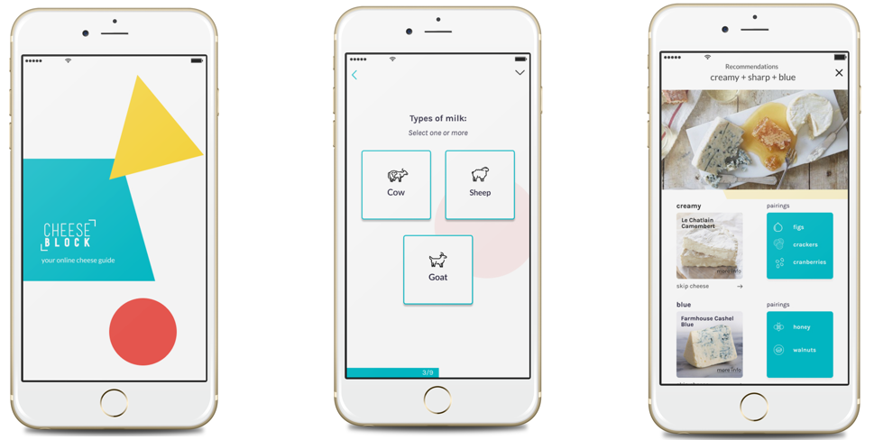

Your online cheese guide
A mobile app that helps users find the perfect cheese plate for any occasion.
Why?
Working as a cheesemonger for many years, one of the questions I always got was, “I want to create a cheese plate, what should I put on it?” After hundreds of these questions I realized how an application like this would be beneficial for people who love to entertain and want to put out a delicious cheese plate but have no idea how to do it. I wanted to create something simple, quick, and fun to use, but also, creating an environment that is not intimidating or pretentious.

Researching phase
First things first, I needed to find out if people actually wanted a mobile app like this, so I created a survey to see if anyone would actually be interested. After I received positive responses I created another survey with more specific cheese questions to get a better idea of what the user’s needs and wants were. I made sure to ask people who would actually use this app. So, targeting more cheese enthusiasts, cheese club members, and people who love to entertain.